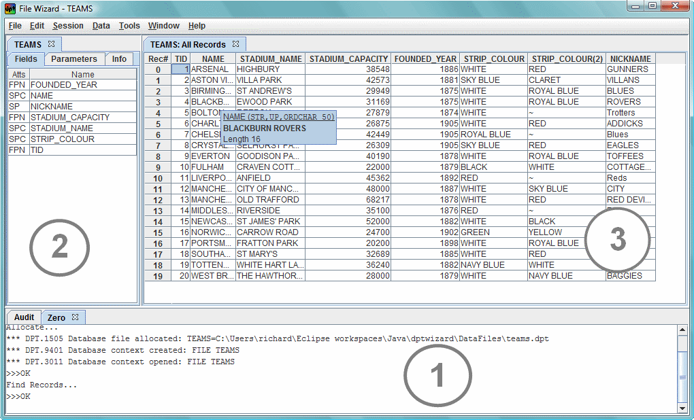

The application was written to test and to showcase the Java API, so it provides the ability to perform most database functions one way or another, but it won't be offended if all you do is use it to browse data and change the odd field here or there.
Since the File Wizard accesses database files directly via low level APIs, it is not necessary to have a DPT host system running anywhere to use it. Files which are currently allocated to a running DPT host can not be opened by the Wizard for enqueue reasons. A future version will support the option to work on files attached to remote hosts.
Each area can be resized or hidden - often the data area (3) may be the only one of interest.

Controls
The tab and arrow keys move the keyboard focus around items on the screen, and there are shortcut keys for fast access to some areas.
Right clicks on most things bring up relevant popup menus.
Hitting enter or double clicking usually activates the selected item in some way, such as (most commonly) initiating a field value edit.
Standard Windows keys and key combinations like F2, F5, Ctrl+C, Ctrl+S, etc. have their usual meanings, or at least something close to them.
When the wizard is launched, it starts an internal DPT DBMS instance and logs on the default user, "user zero". This is sufficient for most operations, but you can start further session threads if you like. Possible reasons for doing so might be to invoke record locking scenarios; to continue working if one or more sessions were locked during e.g. long record sorts; or just to make use of the colours to keep different tasks visually distinct. It would usually make more sense to start separate instances of the wizard rather than separate user threads within the same one but it's up to you.
Just like a regular DPT system the first session initializes the DBMS and the last one to log off closes everything down.
Each session thread gets its own tab in the bottom area of the screen, where its error messages and other output are sent. The system audit trail is shown down there too. Tabs can be selected by clicking them, or Ctrl+Tab when in the output area cycles between tabs. The user on top is the one to receive commands from the GUI. The area as a whole can be focused with Alt+1 or shown/hidden with Ctrl+1 to make more screen space for data.
Files can be selected by clicking them, or Ctrl+Tab when the focus is in this area cycles between files. The file area as a whole can be focused with Alt+2 or shown/hidden with Ctrl+2 to make more screen space for data.
Allocating, opening, closing, freeing files
Most database operations
require that a file be open on the selected user session, in the same way you'd have to do that in a M204 command line session. This is why the default operation of Ctrl+O is to both allocate and open a file, and when double clicking a DPT file in Windows the default session is logged on and opens the selected file.
Similarly, any further user sessions automatically open whatever file, if any, is currently visible. Each session can have many files open, but each session maintains its own current target file (like CURFILE on M204), so switching between sessions may bring different files to the fore.
Closing a file makes it unavailable for most database operations on that user session. A file that is still allocated but closed to the current user session does not show its parameters or fields. Freeing a file removes it from the wizard altogether.
Operations relating to data are targeted at the currently-visible set. Other sets can be selected by clicking their tab or using Ctrl+Tab to cycle through all of them.
How data is displayed in this area
Database records and fields are displayed in a grid format. With record sets the rows represent records and the columns represent fields. With value sets there is a single column containing the values, and an optional second column containing the counts of records with each value.
The display consequences of our DPT/M204-style record format with its repeating and/or optional fields should be explained. By default the order and width of columns is taken from the fields found on the first record in the set, and then more columns are added and sized for fields as they feature on later records as they come into view during scrolling. For example the picture above shows that the NAME column was sized to fit the shortish value "ARSENAL", thus clipping later ones like "BLACKBURN ROVERS". The Ctrl+Y key (Data/Columns/Fit All) quickly makes all values visible.
Columns are not reserved for fields which are defined to the file but do not appear on any of the records. This default scheme means that the column layout for any given set is not constantly shuffling around as the display is scrolled up and down, but it can be also customized if it is unsatisfactory in some way. For example:
Custom column layouts
First arrange the columns by selecting and dragging them around, and/or moving the dividers to resize them, and/or using the "Column
Layout" menu commands. Then when you're happy with how it looks, use "Save Column Layout". If you take the default layout name, your custom layout will automatically be used whenever the same file is opened again by the wizard, and whenever sets of records from that file are created. If you give any other name, you'll have to explicitly use "Load Column Layout" in future. Any time a custom layout is saved or loaded it is used for future sets created in the same file, until another layout is loaded or until you revert back to default operation.
Saved layouts preserve a list of selected columns, their positions, widths, and any non-default formatting applied such as right-alignment on a STRING field. Note that if you add new data to records when a fixed column layout is in effect, the freshly-added fields may or may not appear in view.
Field value format
Values are shown in their cells as they would be printed by a User Language PRINT statement, except in the following cases. Further information is available via cursor-hover and various other operations like cell-edit (see menus).
Selecting data
Cells are selected by moving the cursor around with the arrow/tab keys or clicking on them. Rows are selected by clicking on the (gray) record number on the left side, or by using left-arrow when in the first data cell column. Columns are selected in the same way, by clicking the field name at the top, or using up-arrow when in the first row. Different menu operations are available depending on what's selected. It is not currently possible to select multiple rows or columns at the same time.
The commands for file and field maintenance are all accessible via the "DBA" menu at the top, and mostly also via right click popup menus.
The default action initiated (F2/Enter/Double click) on a file parameter is "reset", on a field name is "rename", and on field attributes is "redefine".
Fast unloads, loads and reorgs can be invoked from this area. The File Wizard is quite a nice interface for these functions if you don't otherwise have any command line or batch procedures set up.
Find operations are used to create the record/value views which get displayed on the right of the screen. To create a new view you can either use one of the right-click popup menus, for example when a column or cell is selected perform a "drill down" find on that value, or enter a complete, more specific query. In the latter case Ctrl+F quickly brings up the "Find Records" dialog, or Ctrl+Alt+F the "Find Values" dialog. The find values version is self-explanatory and is not discussed any further. The find records one has a few more controls to play with, as follows.
Find specification query
Record find specifications must be given the text query format accepted by the DPT database API. The syntax of this is a lot like a User Language FIND statement, but slightly stricter and not supporting the same range of quirks. The most important differences are:
The rules are summarised formally here, including a couple of non-User Language extensions to accommodate common language conventions like "!=" for "NOT EQ", and & for AND, and | for OR. Quotes (either type so long as they match) must also be used to enclose spaces in operands. Hex format can be used with quotes to express operands like e.g. x'0d0a'. Query keywords can be in mixed case but operands are case sensitive.
In addition you can optionally include comment lines in a find specification. Any lines beginning with an asterisk are ignored. Queries can be in mixed case or automatically uppercased according to an option.
Working with multiple find specifications, saving/reusing etc.
The find dialog has a little menu of its own, including File/Open and File/Save, so find specifications can be accessed as text files. The dialog also has several predefined "work area" tabs which you can use to keep more than one query on the go during any wizard session, and avoid having to keep loading and saving queries unless you want to. You can switch between these work areas with Ctrl+tab. F5 runs whichever one is visible.
Other find options
The Find Records dialog has an area at the bottom with some optional controls (accessible via Ctrl+M), with the following functions:
This means the range of things you can do with record or value sets once they're created.
Set names
Sets created by hand can be given a meaningful name in the find dialog, or just take a simple default name. You can rename them later if things become confusing.
Using sets
The following operations are conditionally available based on the type of the target set. For example sorts and referback finds can not be performed on sorted record sets, and "list" modifying functions can only be performed when sets have previously been "listified".
The main record operations are:
Notes
Record-based clipboard operations work as follows. Copy when a record is selected generates the same output as a User Language PRINT ALL INFORMATION statement to the clipboard.
Cut performs a copy followed by deleting the selected database record. Paste stores a new record if the clipboard contains PAI-style data (at least an attempt is made to store a record - it will fail if fields don't exist etc.) See also more clipboard general notes later, e.g. special considerations for BLOBs.
If a record is deleted, the record number actually remains in the current record set, as in User Language. Subsequent attempts to do anything with that record are disallowed (it is grayed out), until the set is refreshed (F5). Indirect set operations like referback finds, lists, and sorts will either come back with a gray row in the same place, or give a "nonexistent record referenced" error message until the set is refreshed.
Most often this will mean hitting Enter/F2 or double clicking on a field value to change that value. The rest of the field modification functions are available via the "Data/Field" menu or by right clicking on cells and column headers in the data table in the obvious way.
The main field operations are:
Notes
Values entered can be treated in various ways vis-a-vis Unicode/ASCII conversion and text case.
Insertion by default assumes a new occurrence 1 will be inserted, but you can easily change this either on the value-entry dialog, or by positioning the cell selection at an appropriate existing occurrence of the desired field to insert a new value at that occurrence.
Single field value deletion when a cell is selected (using "cut" or the delete key) does not ask for confirmation. You can also invoke an interactive dialog via the menu - this is necessary if invisible field values are to be deleted, since the existing value must be supplied then.
The same field visibility requirements are applied to these operations as in User Language. So for invisible fields addition is always valid, insertion never is, and change and individual delete operations require an existing value to be given (which you might copy from a value set view).
Field based clipboard operations work as follows. Copy takes the value alone as text, the same as would be generated by a User Language PRINT statement. Cut performs a copy followed by deleting the selected field occurrence from the record. Paste onto a selected cell does the same as a User Language CHANGE statement, so long as the clipboard contains a single item which does not look like a record PAI (see record operations above for what happens then). See also more clipboard general notes later, e.g. special considerations for BLOBs.
Field value changes are displayed in the foremost data view when they are made, but any other views in existence retain their old view of the data. Other sets can easily be refreshed (F5) to pick up changes.
When adding lots of fields to the same record, tick the "more" box to make the value-entry dialog stay visible continuously.
Using the clipboard with file data
Cut/Copy: When cutting/copying a field value, the value of the field is taken alone. When cutting/copying a whole record, field=value pairs are placed on the clipboard with line breaks between them - the same format as a User Language PAI statement. When copying a column the clipboard gets the values in the column with line breaks between them. When copying an entire table the values are arranged in a suitable format for paste into a spreadsheet, that is, separated with tabs between fields and line breaks between records.
Cut requires there to be a selected field value or record, and includes a DBMS delete operation. Copy is allowed in various other situations too, such as when there is a selected column.
Paste: The operation of "paste" depends on the current contents of the clipboard. Single items of text are taken to be attempts to overwrite the selected field value, and trigger a database change operation. Information in "PAI" format is taken to be an attempt to store a new record with those fields and values. So for example selecting a record and using Ctrl+C, Ctrl+V, makes a copy of the selected record.
BLOBs: Cut and copy always generate full BLOB values. The operation of the default cut and copy (Ctrl+C and X) is to generate BLOB field values as hex strings (X'414243') and all other fields as plain strings (ABC). Special "Edit" menu commands are available to do variations when STRING or BLOB field contents might contain unusual values.
Data format: All clipboard data is read and written as text, as used by most applications, so information can be transferred in and out of things like notepad. No fancy formats are currently supported.
Unicode and binary data issues
Since the File Wizard is written in Java, using the DPT Java dabatase API, it has to take into account the multi-byte view of strings, rather than assuming that each character shown on the screen necessarily represents one byte. The implications of this issue for the DPT Java API are covered in more detail in the DPT API programming guide, Java chapter.
The default approach taken here in the File Wizard GUI when presenting values and taking user input is that STRING fields probably contain simple textual data, and BLOB fields probably have some binary meaning. What this means is firstly that STRINGs display as simple string literals (as converted by the basic Java Unicode-to-byte routines), and BLOBs display in a hex format (X'...') generated directly from the DPT database values, bypassing Unicode. Secondly what it means is that when updating fields, the initially-requested style for plain STRINGs is plain text, and for BLOBs is X'...', with the latter being transferred into the database without passing through Unicode form, using the API's byte[] interfaces.
It is acceptable to use either style in any situation, regardless of field attributes. When entering field values, just use X'...' format to bypass Unicode (holding down the Alt key when initiating a field edit goes direct to hex mode). When using the various display functions (including cut and copy) the menus contain a variety of options to change the data format, with hex values coming directly out of the database and bypassing Unicode.
Text case
By default the wizard accepts mixed case in query text and edited field values. However there is an option to make it uppercase everything much like the operation of the default CASE parameter at the Model 204 command line. Turning this on and off in the "Tools/Options"
menu is analogous to issuing the *UPPER and *LOWER commands on M204, except that here the option is a persistent user preference and you don't have to do it every time you use the wizard. Query text keywords are valid either way (i.e. mixed case), so using the default option really just saves SHIFT key work if most of your data is in uppercase.
DBMS transactions (save/undo changes)
Changes to data are not by default saved at the time you make them - it requires a DBMS "commit" operation. Some commands, like initializing a file or defining a field, contain an implied commit but you can also trigger one with Ctrl+S - "save" is the approximate equivalent operation in a PC-style application. Commits also occur when exiting the Wizard application and optionally every 5 minutes (Tools/options/autosave).
The Wizard application title line shows an asterisk when the current user has any pending updates.
Changes can be abandoned with Ctrl+Shift+S ("un-save") which issues a DBMS backout call. Most changes will also be put back how they were in the displayed data view but there may be times when the display gets out of step with the database, in which case just use refresh (F5), or as a last resort discard sets and re-find them.
Note that there is no Ctrl+Z function to undo a single update like you get in some applications - the DBMS does not support partial backouts in the current release. Commits and backouts rely on the internal DBMS running with its TBO (transaction backout) facility turned on, which it will be unless you go to the trouble of manually reconfiguring it (see configuration comments below).
A.1. Text case options
There are two separate options, one just controlling the preferred display format for hex literals (x'a1b1' vs X'A1B1') and the other operating more like the Model 204 command line parameter CASE, which auto-uppercases all input (queries, field changes etc.). See above for more on that.
A.2. Create working subdirectory
Enabled by default - allows many wizard instances from the same executable (see invocation notes). As implemented this option means you can *not* configure the internal DBMS host via parms.ini, since files like that are deleted each time. Disable the "recreate" option and permanent parms.ini etc. will get created, allowing more detailed configurations, but only one instance of the wizard can then run per copy of the executable/working directory. In turn this will mean the Wizard will not be so useful for accessing files in Windows Explorer since only one executable can be associated with a file extension.
Also note that tinkering with data integrity settings like RCVOPT may potentially cause problems. The Wizard is designed to run with TBO=on and checkpointing=off. The default parms.ini file contains the following. Other resettable parameters can be changed with Ctrl+R.
RCVOPT=2 * TBO only MAXBUF=1024 * Small buffer pool - it's not a high-throughput application ENQRETRY=0 * Record locking conflicts are reported immediately
A.3. Delete working subdirectory
Related to the above. Enabled by default, so fresh temp subdirectories do not build up over time. If "create" is off, this option has no effect. Sometimes it may be useful to examine the audit trail after a Wizard session, in which case turn this option off for a while.
The default directory for fast unload extracts from the Wizard if you do them will be within this temporary directory, so it may be best to choose something more permanent there.
B.1. Invocation and installation
File Wizard needs access to the two API DLLs (dptcapi.dll and dptjapi.dll). In the default install directory they will be in a known place and things will work, but running the wizard in another directory will not unless the dlls are put in the same directory or somewhere more globally-accessible like C:\Windows.
Like any DPT DBMS server application, the wizard must run in a working directory it has write access to, so that it can create the audit trail and other auxiliary files. Unlike dpthost.exe however, many instances of the wizard can be run from the same copy of the executable, because the auxiliary files are all created in a dynamically-created temporary subdirectory (by default), and there is therefore no contention for the same audit trail etc. This feature allows the single copy of dptwizard.exe to be associated with ".DPT" files, and for many instances of the application to be running at the same time on different files if desired.
B.2. Sample directories
Everything is relative to the dptwizard.exe
program, wherever you put that. By default the installer
puts it in C:\DPT\wizard, alongside the DPT client and host application directories.
Notes about some of the subdirectories of that:
\DPT\wizard
B.3. Printing
There is currently no direct hardcopy feature in this program. Various operations print output to the session output tabs at the bottom, including the Ctrl+D variations which do a "print all information" for one or more records. If you want a hardcopy, use those commands, then copy/paste from the output area into notepad or a word processor.
Ctrl is the main shortcut key. Where a wizard function corresponds to a single-letter command on Model 204, the same letter is usually used (V=View, R=Reset, O=Open etc.) Ctrl+Alt usually means a similar but alternative action (e.g. find values instead of find records). Ctrl+Shift usually means a kind of reversal of the main action (e.g. logoff instead of logon, backout instead of commit). The other combos are used as required but sticking to that general scheme.
Alt+... obviously invokes menu operations, and those aren't all listed here. Also there are some Ctrl+.... shortcuts (the ones usually found on application "Edit" and "Window" menus) which have standard Windows meanings. Ctrl+V and Ctrl+Tab for example. These are only listed below if there is any ambiguity about when the standard meaning applies.
All the following can be found in the application menus, but some are buried in non-obvious places, so here's a list with some extra notes thrown in.
| Key | Ctrl | Alt | Shift | Function |
|---|---|---|---|---|
| C | (When editing a GUI item) Edit/Copy text | |||
| C | (When a record is selected) Performs a record "PAI" to the clipboard | |||
| C | (When a data cell is selected) Copies the selected value to the clipboard | |||
| D | (When a record is selected) Displays the record in "PAI" form to the output pane (abbreviated BLOBs) | |||
| D | (When a field is selected) Displays the field value to the output pane (abbreviated BLOB) | |||
| D | (When a record is selected) As above, including full BLOBs, with strings and BLOBs in both readable and hex format | |||
| D | (When a field is selected) As above, including full BLOB, with strings or BLOB in both string and hex format | |||
| F | Find records (open find spec editor) | |||
| F | Find values | |||
| F | Release lock and discard the selected record set (= "un-find" the set) | |||
| F | Find "into" the currently-displayed record set (just opens the find spec editor with referback already filled in) | |||
| I | Insert a field into the current record at the selected position | |||
| I | Append a field to the end of the current record | |||
| L | Logon - start another DBMS session thread | |||
| L | Log off - terminate the current foreground session. If it's the last one, the the application closes | |||
| N | Store a new empty record in the current file, and re-find it | |||
| O | Allocate and open an existing file. See comments about allocate/open | |||
| O | Open an already-allocated file | |||
| O | Close an open file and free if possible | |||
| O | Close an open file, don't try to free it | |||
| R | Reset parameter for the current target session and/or file | |||
| S | (During find spec edit) Saves the find spec | |||
| S | (Otherwise) Save database changes - i.e. COMMIT transaction (see TBO notes) | |||
| S | Database transaction backout (= the reverse of save) | |||
| V | (When editing a GUI item) Edit/Paste text as usual | |||
| V | (When a record or field is selected) Changes field or stores a new record - see clipboard operation notes | |||
| V | View all parameters for the current target session, printing to the output pane | |||
| V | View all non-zero statistics at all collection levels, printing to the output pane | |||
| X | (When editing a GUI item) Edit/Cut text | |||
| X | (When a record is selected) Deletes the record (after clip copy, effectively Ctrl+C, Del) | |||
| X | (When a field is selected) Deletes the field occurrence (after clip copy, effectively Ctrl+C, Del) | |||
| Y | Column layout: fit all columns to data, ignoring column headers | |||
| Y | Column layout: fit all columns to data or header (whichever is widest) | |||
| 1 | Toggle the session output area visible/invisible | |||
| 1 | Tab to the session output area, making visible if required | |||
| 2 | Toggle the file info area visible/invisible | |||
| 2 | Tab to the file info area, making visible if required | |||
| 3 | Tab to the data grid area (can't be made invisible - best you can do is make it tiny) | |||
| Delete | (When editing a GUI item) Delete character | |||
| Delete | (When a record is selected) Delete the record from the database (like in User Language it remains in the set) | |||
| Delete | (When a field is selected) Delete the field occurrence from the record | |||
| Delete | Initiate dialog to allow deletion of an invisible field from the current record. | |||
| F2 | Standard Windows "edit" key, initiates e.g. rename, redefine attributes, change value. | |||
| F2 | Initiate change field value in direct hex mode. | |||
| F5 | Refresh currently-displayed set if the set type supports it. |